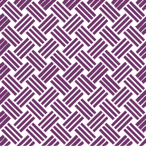
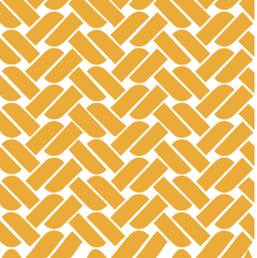
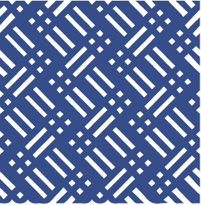
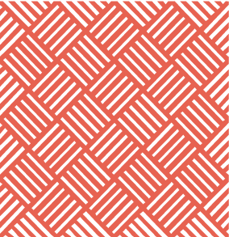

WEAVING TECHNIQUES

LOOM
One of the oldest weaving technologies, looming uses two kinds of looms and beams. It is also known as the body tension loom.

WARP FLOAT
Threads go over one another more than once to show a specific pattern. The design is the main structure of the cloth.

PLAIN WEAVE
Simplest and oldest technique of weaving. At most, uses two heddles. Weaving pattern is alternating threads.

TAPESTRY
Uses discontinuous weft threads to highlight the structure of the cloth. Tapestry is an adopted technique from China.